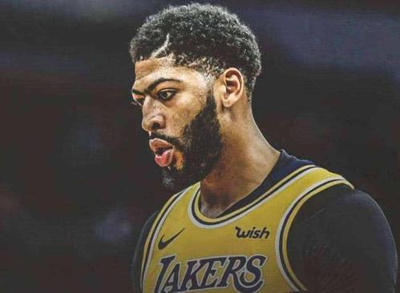
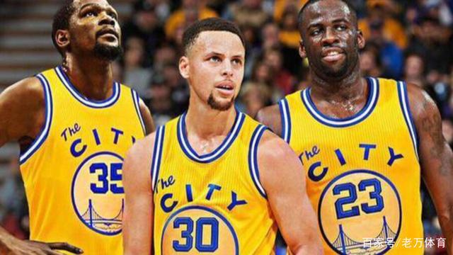

湖人VS快船的这场圣诞大战，外界普遍看来是总决赛的提前上演，经历了休赛期的“眉有的事，不要湖说”最终浓眉哥决定带着他的天赋从新奥尔良来到“天使之城”。
去年的洛杉矶湖人因为詹皇的到来，成为媒体的焦点，但随着英格拉姆、球哥、接连不断伤停，湖人连季后赛也没进，难免有些虎头蛇尾。休赛期湖人一波大交易，送走湖人三少，仅留下又帅又能打的裤子马（现在裤子马成为湖人队内资历最老的）。交易来火花、大麦基、隆指导、湖人的板凳深度，可称联盟前三。再加上2K20评分最高的双人组詹皇和浓眉，今年的湖人妥妥的争冠队伍，不知道圣诞之夜“波普定律”还能否发挥作用，我们拭目以待！
在CP3和给力芬接连出走之后，曾经的空接之城沦为“鱼腩球队”。上赛季的快船创造了很多惊喜，在队内没有超级巨星的情况下，西部第八闯入季后赛，首轮面对五星勇士，创造史上最大翻盘31分大逆转，让无数人见识到老里弗斯带领下的快船有多铁血！凭借一帮板凳匪徒和三连最佳第六人的路易斯威廉姆斯，面对巅峰的勇士，血战六场遗憾告负！但这支快船已经创造了历史！
休赛期，整个美国都在猜“小卡去哪儿了”，随着转会期结束，莱昂纳德和俄城的泡大将军携手奔赴快船，联盟前二锋线联手，两位攻防一体的超级巨星，为这支快船带来了令人惊艳的天赋。
梦之队集训中断腿大伤的PG，经过一个赛季的康复，最终在俄克拉荷马找回自己的天赋。丝滑的投射和超强的单打终结能力，快船的泡将军在攻防两端都做到了生涯最佳，常规赛赛程过半，PG证明了自己完美契合这支快船队。
去年的小卡上演了太多的奇迹，绝杀76人，季后赛场均30+，带领猛龙队单核夺冠！两次获得FMVP的莱昂纳德，证明了自己，也证明了波波维奇的做法是错误的。如今场均25.5+7.8+5.1的小卡，还没有展现最强的自己，在他的带领下，这支快船不可阻挡。
本文来源于快科技

备受人瞩目的2018年圣诞大战，激烈打响。
勇士首发：库里、克莱、杜兰特、追梦、鲁尼
湖人首发：鲍尔、英格拉姆、詹姆斯、库兹马、祖巴茨
麦基今天还是缺战，祖巴茨继续首发，小伙子之前表现一直不错，在詹姆斯、鲍尔、隆多这些人的连续饲喂下，吃的都是饱饱的。
今年已经是湖人连续第20年参加圣诞大战，哪怕前五个赛季战绩糟糕，早早无缘季后赛，但在湖人的豪门底蕴，洛杉矶的市场，让湖人仍然是圣诞大战参赛球队的必然之选。今年圣诞大战更加受人瞩目，不仅仅是因为勒布朗连续第4次与勇士圣诞节交手，也因为本赛季勒布朗加盟了湖人，让湖人不再是鱼腩，目前已经位居西部联盟的第4位，实力上已经可以和勇士一较高下了，这也让比赛更加让人关注。
比赛结果既在意料之外,又在情理之中。湖人本赛季不是弱旅，勇士输球是情理之中。但是勇士竟然在主场惨败26分，则在意料之外了。勇士全队命中率下降的时候，哪个球队都可以输。看看四大天王的命中率，杜兰特13投5中，库里17投5中，做为看家本领的三分球也只有8投2中，汤普森7投2中，格林7投2中，先发球员命中率如此，输球也就不奇怪了。勇士替补只有伊戈达拉表现出色，12投9中，但是又被另外一个10投2中的麦金尼抵消了。反过来看湖人的表现，虽然高效的勒布朗伤退，主力球员除了祖巴茨命中率也不高，但是替补全部表现出色，尤其是隆指导，11投6中，15分，外加10个助攻，在勒布朗回不了场上，比分被迫近到2分，无人得分的时候，隆指导率队稳住局势，起到了定海神针的作用。本场比赛除了头号功臣隆指导之外，贡献最大的就是首发中锋祖巴茨了，麦基因病休战之后，沃顿教练没有把“拳王”钱德勒提到首发中锋的位置，而是让年轻中锋祖巴茨进入首发，而祖巴茨也比较争气，三场比赛全部得分超过15，且效率极高，命中率达到78.9%。祖巴茨的爆发再一次证明了优秀传球手的重要性，有一个优秀的传球手，球队的进攻会水银泻地般华丽，何况优秀的传球手不止一个，勒布朗，隆指导，球哥，能在这样的队友身边打球，是多么幸福的事情（换笔者上去也能场均7，8分吧，笑）。所以那些说祖巴茨是天才的人，不要拿这几场比赛的表现来定论。不是祖巴茨有多天才，只是因为有了勒布朗，隆指导，球哥而已。麦基的表现也是另外一个明证。
本场比赛对湖人来说唯一不好的消息就是勒布朗受伤下场，勒布朗之余湖人的重要性不言而喻，从上个赛季和本赛季的战绩就已经完全说明问题，几乎相同的阵容，几乎相同的打法，只是因为一个勒布朗，结果完全不同，就好象那个画龙点睛之笔一样。赛季初球队缺了英格拉姆，隆指导，这段时间缺了麦基，球队只是在排兵布阵上有些捉襟见肘，如果勒布朗缺阵，再怎样拍兵都是枉然，因为缺了魂。希望勒布朗的受伤没有大碍，早日回归赛场。